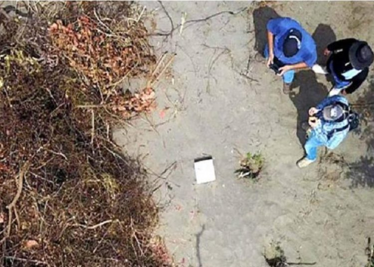

Las Noticias nacionales e internacionales mas relevantes


Nacionales

ANEP y FUSADES primero critican relaciones con China. Ahora reclaman no ser incluidos en comitiva
Jose Ángel Quirós, Director Ejecutivo de Fusades, mostró su descontento por no formar parte de la comitiva que se encuentra...

PNC reporta aparatoso accidente en San Miguel
Agentes de la División de Tránsito de la Policía Nacional Civil (PNC), reportaron un aparatoso accidente sobre la avenida José...

FSV anuncia la apertura de nueva ventanilla en Long Island
El Fondo Social para la Vivienda (FSV), junto al Ministerio de Relaciones Exteriores, anunciaron la apertura de la nueva Ventanilla...

Vanda Pignato: “Yo les juro que no necesito ningún centavo del gobierno de El Salvador”
Vanda Pignato, secretaria de Inclusión Social, enfrentó una audiencia especial y al salir del Juzgado Octavo de Instrucción reiteró que...

Cadete pagó $7,400 y queda libre por homicidio culposo
El Tribunal Primero de Sentencia de Santa Tecla cerró el caso de cinco cadetes que eran acusados de homicidio culposo,...
Internacionales

Juez propuesto por Trump para el Tribunal Supremo rechaza saludo de padre de víctima de tiroteo
Brett Kavanaugh, el juez nominado por el presidente Donald Trump para convertirse en magistrado del Tribunal Supremo, rechazó hoy martes...
¿Quién es el hombre que apuñaló al candidato presidencial de Brasil?
El ataque se produjo mientras el aspirante presidencial era cargado en hombros en medio de una multitud en Juiz de Fora

Hallan 166 cráneos humanos en fosas comunes en Veracruz
Un grupo de investigadores mexicanos halló este jueves 6 de septiembre 166 cráneos humanos en fosas comunes clandestinas en el...
Muere leyenda de Hollywood, Burt Reynolds
En The Last Movie Star, una de sus últimas apariciones en las pantallas, Burt Reynolds encarnaba a una exestrella en horas bajas, un macho...
EE.UU. hace caso omiso a acuerdo judicial y prolongará detención de niños migrantes
El gobierno del presidente Donald Trump anunció este jueves 6 de septiembre que "hará caso omiso" de un acuerdo judicial...

Las potencias de América Latina urgen a Maduro aceptar ayuda humanitaria
La primera reunión para abordar de forma conjunta la crisis migratoria de venezolanos terminó con una declaración de 18 puntos en la...
Niños y adolescentes franceses regresaron a las clases, pero sin celulares
Esta semana, unos 12 millones de niños y adolescentes de Francia iniciaron el nuevo ciclo escolar, pero con una novedad:...
Deportes
Kylian Mbappé es sancionado con tres partidos de suspensión
El delantero francés del París Saint-Germain (PSG), Kylian Mbappé, fue sancionado este miércoles 5 de septiembre por la Comisión de Disciplina de...
Gerard Piqué en aprietos por esta peculiar razón
La Guardia Urbana de Barcelona, España, denunció el viernes 31 de agosto a Gerard Piqué, cuando circulaba por el distrito del Eixample...
Zidane avisa a Lopetegui: “En el Madrid tienes que ganarlo todo”
Zinedine Zidane, extécnico del Real Madrid, ha concedido una entrevista en la web de la UEFA en la que habla...
Esta es la suma que cobrará LeBron James por cada minuto en los Lakers
A poco más de un mes para el inicio de la temporada de la NBA, se conoció el salario que percibirá el...
Famosos
Quién es Brie Larson, la nueva heroína del Universo Marvel
Talentosa, versátil, defensora de los derechos de las mujeres, fanática de Star Wars y vegana. Así es Brie Larson, la actriz estadounidense que protagonizará Capitana Marvel ...
“¡Aléjate de Hollywood!” , le dicen a Demi Lovato
Familiares de la cantante estadounidense Demi Lovato quieren que la joven de 26 años se aleje de todo lo que...
Subastan una gran cantidad de objetos del actor Robin Williams
Los más de 300 objetos ofrecen una panorámica de los diversos gustos y aficiones de Williams y su esposa, productora de...